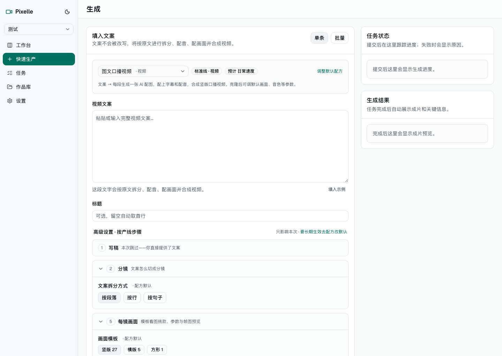
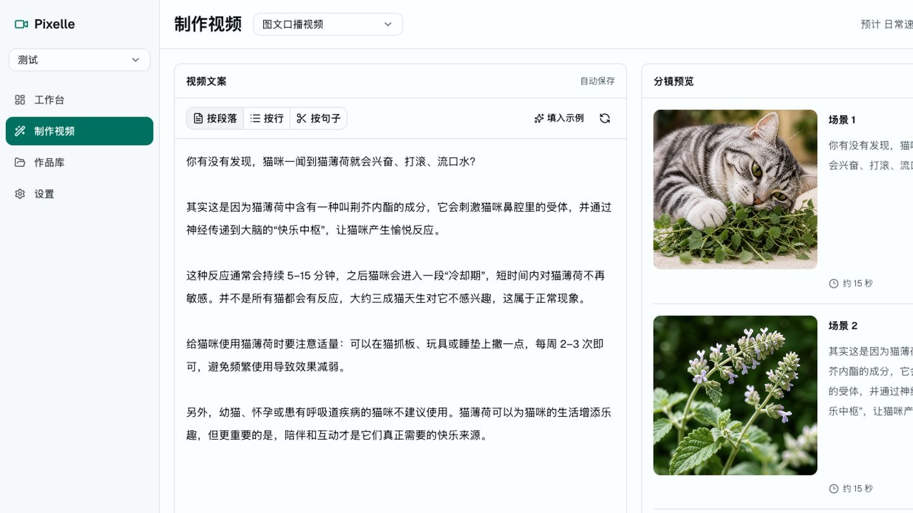
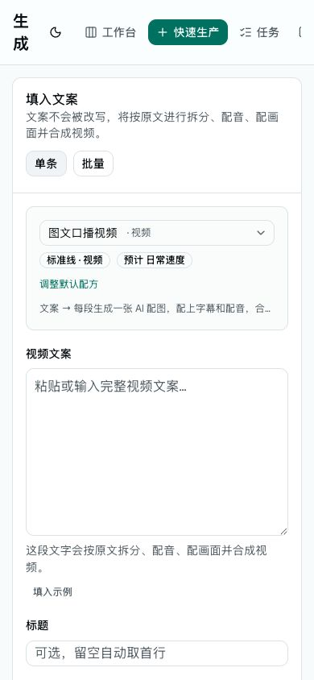
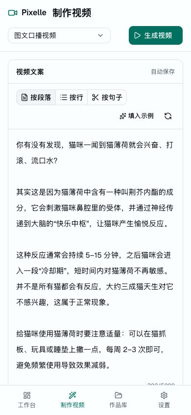

Pixelle 全站改版蓝图
把选定高保真 Demo 的设计语言迁入正式产品，而不是继续维护第二套页面。
统一壳层、创作工作台语法与状态契约；双栏只服务需要边编辑边观察结果的场景。
改版北极星
要迁移的是产品调性与组件语法，不是把 Demo 结构复制到所有页面。
一个产品壳层，三类页面骨架
编辑型工作台采用流体分栏；列表与看板保持对象密度；设置与详情使用限宽纵向结构。三者共享导航、页头、状态与控件系统。
不新增一条平行 Demo 产品线
正式 ProductionStudio 保留 topic、assets、图集、长文、批量等完整能力；新视觉只替换视图与壳层，不复制一套简化业务逻辑。
现状 → 目标
桌面与移动端都保留任务上下文，只减少视觉噪音和布局跳转。


移动端不是桌面压缩版


页面改版优先级
先打通主链路，再处理对象页与专项流程。
统一壳层与生成主流程，直接决定整站是否像同一个产品。
承接主链路的任务、详情、配方和设置必须同步收敛。
先继承新壳层与 token，再在后续迭代重排内容。
目标设计语言
以冷白、细边框、清晰层级建立专业创作工具气质。
颜色与表面
排版与密度
一个实心主动作
teal 只用于主 CTA、当前态与链接。
状态不改布局
预览 → 进度 → 结果始终在同一右栏。
编辑才用双栏
列表、设置、普通详情不套工作台结构。
反馈有语义
success / warning / info / danger 使用语义 token。
动效克制
150–200ms，并支持 prefers-reduced-motion。
代码迁移顺序
视觉统一建立在正确的壳层与状态契约之上。
统一骨架
AppShellV2
ContextHeader
PageFrame / WorkspacePanel
先合并 /demo/studio 与正式生成页，保留完整业务能力。
打通主链路
Create
ProductionStudio
Library / Board / Tasks
项目切换、任务终态、作品与发布状态必须一致。
对象页收口
Settings
Recipe / Project
Content detail
统一对象页头、URL 状态与渐进披露。
专项与旧入口
Special pipeline
Script review
Streamlit legacy
继承新系统后再逐步冻结、迁移和下线。
上线前架构闸门
这些不是“顺便优化”，而是避免新 UI 把旧问题包装得更漂亮。
完成定义
不是“页面看起来统一”，而是关键链路行为、状态与响应式都可验证。
所有正式路由使用 AppShellV2，Demo 路由删除或重定向。
文案、选题、素材、图集、长文、批量能力无回退。
生成、任务、作品库、发布可从同一事实源恢复。
1440 与 390 视口主任务无遮挡、溢出和关键动作缺失。
导航支持复制地址、返回与新标签页。
关键页面同视口对比通过，token 与设计规范同步。